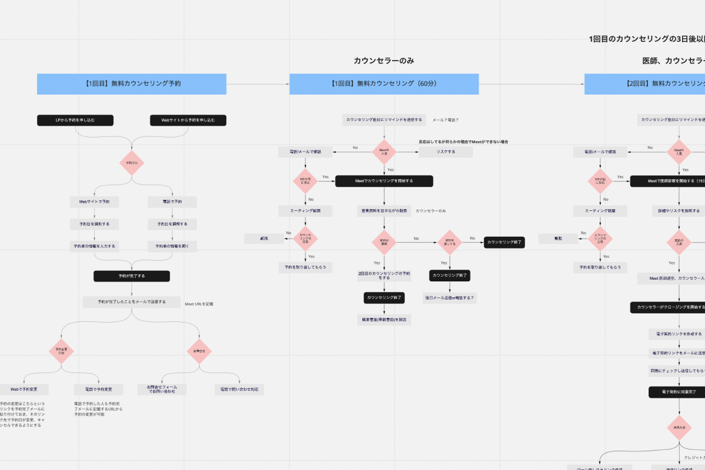
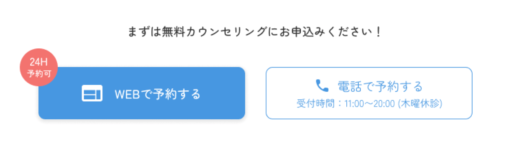

KYOSUKE TSUKAMOTO
works
医療クリニック「LOSKA CLINIC」の新規事業立ち上げ
-
SOFTWARE
-
SEASON & TIMES
-
-
MEMBER
-


-
プロジェクト概要
最先端の医療ダイエットを全国どこでも受けることができる医療クリニック「LOSKA CLINIC」の新規事業立ち上げに携わりました。そのうち、サービス設計とホームページの作成、および営業資料の作成等、クリエイティブ全般を担当いたしました。
-
課題・背景
従来の医療クリニックの課題
・形式的な診察や、処方薬は決められた種類・量を処方されるだけ。
・処方薬の他に痩身機械などを使用するため高価。
・毎週通院しなければならないため時間がかかる。 -
意図・目的
医師が顧客の体質・生活を把握し、栄養指導やLINE相談を通してパーソナルにアドバイスや薬の処方を行う。
痩身機械を使用せず、痩せるのに本当に必要なものだけを厳選することで、始めやすい価格を実現。
オンライン診察を可能とすることで、忙しい方でも無理なく診療を受けられるサービス設計に。 -
ターゲット
35歳、働く女性 ややふくよか（BMI25～30)
おしゃれや美容は人並みに好きで、スタイルの良い友人や有名人がうらやましい。常に「痩せたい」と思っているが、なかなか自分で痩せる努力ができない。ラクなことやオイシイ話は好き。分割支払い（医療ローン）に抵抗なし。
開発プロセス
-

企画よりプロジェクトの概要、課題・目的等を共有してもらい、プロジェクトにジョイン。
必要な要件や、技術的に実現可能かどうかなどを、企画側、エンジニア側とコミュニケーションしながら、オンラインでのカウンセリング、医師診察、クロージングがスムーズにできるようサービス設計を行う。 -

サービス設計を元にホームページに必要な要素を洗い出し、要件定義を行う。また、ワイヤーフレームを作成することで、ホームページのコンバージョンである「カウンセリングの予約」がスムーズにできるか確認する。
-

ワイヤーフレームを元にデザインを作成する。
ターゲットが「35歳、働く女性 ややふくよか（BMI25～30）」なので、「女性が親しみやすい」「綺麗な雰囲気」「信頼のおける色」として水色を採用し、きついダイエットではなく、優しい印象を持たせるためにフォントには丸ゴシックを採用。
デザインをエンジニア側に実装してもらいリリース。
工夫点
-

クリニックの強みである「パーソナルな医療ダイエット」「オンラインでの診察」「始めやすい価格」をTOPページで示すことで、他クリニックとの競争優位性を示す。
-

一番利用してほしい料金プランを目立たせることで、他プランと差別化。
-

WEB予約を推奨したいためボタンを目立たせ、電話予約はユーザーに選択肢を残しつつも目立ちすぎぬようデザインを調整。
-
ユーザーがサイトを回遊する中で、カウンセリングの予約をしようと思った際、素早く予約フローを踏むことができるよう予約ボタンを追従。
-
ファーストビューで質問だけ表示することでスクロールの冗長化を防ぎ、ユーザーが欲する情報に素早くに辿り着けるように。